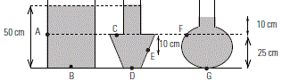
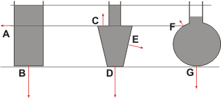
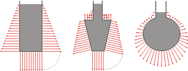

NO ME SALEN
(PROBLEMAS RESUELTOS DE BIOFÍSICA DEL CBC)
FLUIDOS
HIDROSTÁTICA |
|

|
 |

|
11- Los tres recipientes abiertos de la figura
contienen agua hasta los niveles indicados.
|
|  |
|
|
a) Indique la dirección y el sentido de las fuerzas
que el líquido ejerce sobre las paredes del
recipiente en los puntos marcados.
b) En referencia a las presiones hidrostáticas
en los puntos dados, ordénelas de menor a
mayor, sin efectuar cálculos.
c) Calcule la presión hidrostática (en este caso,
coincidente con la manométrica) en cada uno de
los puntos indicados.
|
|
|
OK, es una pavada pero el dibujo invita al error. Consignas: la presión aumenta en funcion de la profundidad, profundidad, profundidad, profundidad, profundidad, profundidad, profundidad, profundidad, profundidad... no sé cómo hacer para que se te graba en el cerebro...
Y la profundidad tenés que medirla de arriba para abajo con el cero en la superficie libre del líquido. Acá se trata del mismo líquido en los tres recipientes, de modo que la comparación es pertinente.
La presión no es un vector, no tiene dirección ni sentido. Pero la fuerza sí, y su dirección es perpendicular a la superficie que la presión comprime.
Dicho todo esto, ordenemos de mayor a menos las fuerzas que hace el líquido sobre los recipientes.
FB = FD > FG = FE > FA = FC > FF
|
|
|
|  |
|
|
b) En referencia a las presiones hidrostáticas... es obvio que el orden es el mismo que las fuerzas.
prB = prD > prG = prE > prA = prC > prF
c) Calcule la presión hidrostática... principio general...
prB = 1.000 kg/m3 . 10 m/s² . 0,50 m = 5.000 Pa
prD = 1.000 kg/m3 . 10 m/s² . 0,50 m = 5.000 Pa
prG = 1.000 kg/m3 . 10 m/s² . 0,35 m = 3.500 Pa
prE = 1.000 kg/m3 . 10 m/s² . 0,35 m = 3.500 Pa
prA = 1.000 kg/m3 . 10 m/s² . 0,25 m = 2.500 Pa
prC = 1.000 kg/m3 . 10 m/s² . 0,25 m = 2.500 Pa
prF = 1.000 kg/m3 . 10 m/s² . 0,10 m = 1.000 Pa
|
|
|
| BONUS TRACK. Mirá lo que hice en mi aislamiento por el coronavirus. |
|
|  |
|
Los arcos punteados son para mostrarte que las fuerzas hacia abajo tienen la misma intensidad que la fuerza lateral más baja (ya que están aplicadas a la misma profundidad).
Un modo práctico y sencillo de observar las direcciones y módulos de las fuerzas es practicar pequeños orificios en las paredes de los recipientes. La velocidad con la que sale despedido el chorrito es indicador de la fuerza.
No deja de ser una pregunta interesante por qué la dirección de las fuerzas es normal a las paredes. La explicación nos lleva a la naturaleza de los fluidos: sus moléculas se mueven en todas direcciones, sin excepción. Luego siempre que una molécula golpea la pared hacia afuera y arriba, hay otra que golpea hacia afuera y abajo. El arriba-abajo se compensa, sólo queda el afuera-afuera (no hay moléculas que golpeen la pared desde adentro de la pared, ahí no hay fluido).
Es loco pensar, por ejemplo, que un auto que pesa una tonelada se mantiene a la altura que se mantiene sobre el asfalto debido al choque incesante de trillones y trillones de moléculas de aire que golpean y rebotan dentro de las ruedas. No te olvides que los gases son espacialmente casi espacio vacío. |
|
| PARA SABER MÁS: |
 |
| |
| |
| |
|
| Algunos derechos reservados.
Se permite su reproducción citando la fuente. La Asociación Internacional de Físicos Constructivistas y el Club Boca Juniors recomiendan NO utilizar este material didáctico por considerarlo altamente pernicioso. Última actualización mar-20. Buenos Aires, Argentina. |
|
|
| | |
|
|